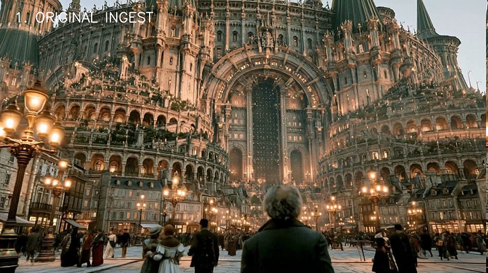
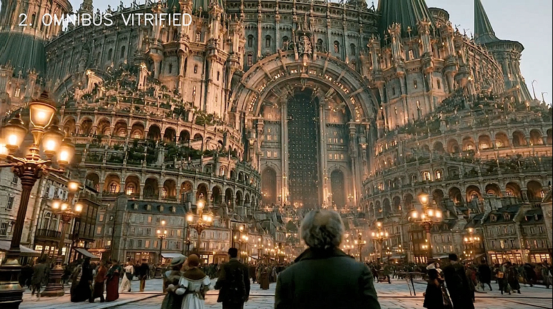
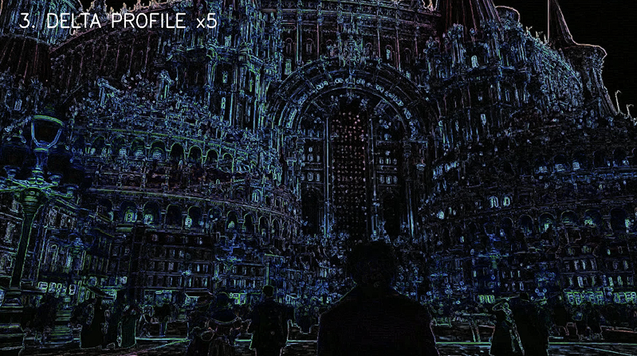
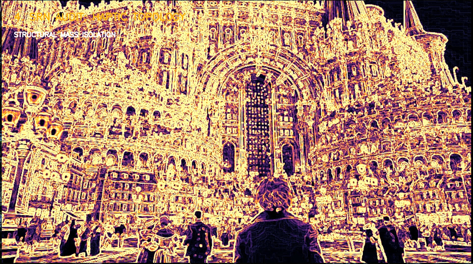

STRUCTURAL CONDITIONING & DIAGNOSTIC AUDIT WORKFLOW
Controlled media conditioning with measurable structural visibility.
Omnibus Vitrifier™ applies a controlled conditioning workflow to digital media assets while maintaining the source asset's visual character and deployment objectives. The resulting deployment master is accompanied by technical audit layers that reveal structural changes not apparent through visual comparison alone.
Omnibus Vitrifier™ is designed as a dedicated conditioning appliance positioned within professional media deployment workflows prior to display or distribution.
The following sequence demonstrates the relationship between source material, conditioned output, and diagnostic analysis layers.

Unmodified generative source media entering the processing pipeline.

Conditioned output preserving the original visual character while applying deterministic structural processing.

A 5× amplified pixel-domain residual analysis comparing source ingest against vitrified output. This diagnostic view exposes the exact spatial footprint of the transformation engine, revealing where signal conditioning, micro-lattice refinement, contrast architecture, spatial diffusion, and reconstruction processes alter the image structure.

Gradient-field analysis of the conditioned output, converting luminance transitions and edge relationships into a high-contrast structural representation. The SRN layer reveals spatial organization, boundary definition, and surface topology behavior within the transformed asset.
Omnibus Vitrifier™ is not an image enhancement filter, creative LUT, or generative transformation system.
It is a controlled media conditioning architecture designed to produce repeatable deployment assets while exposing measurable transformation behavior through integrated diagnostic layers.
OMNIBUS VITRIFIER™ PRESERVES CREATIVE INTENT WHILE ENGINEERING MEDIA RELIABILITY.